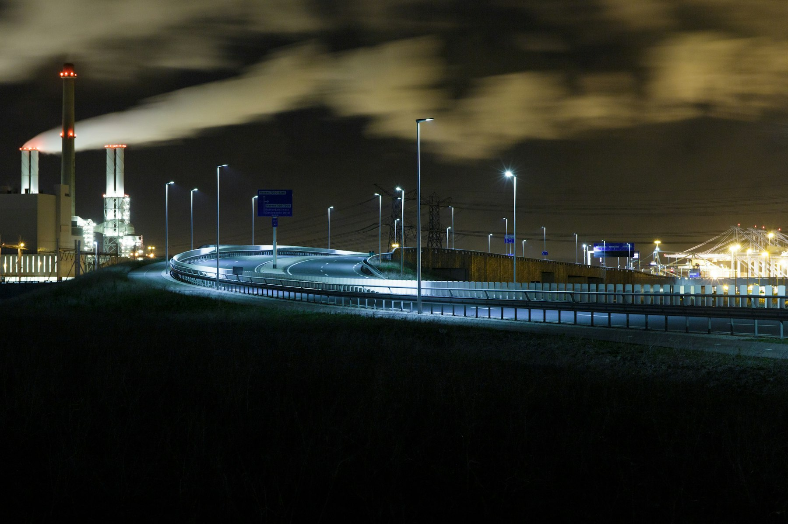
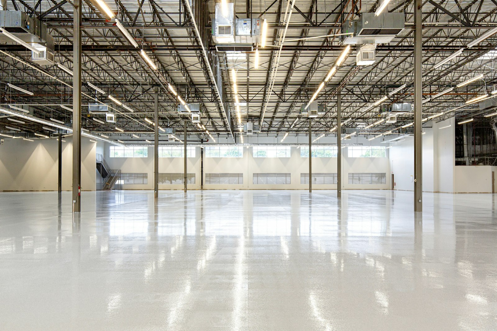
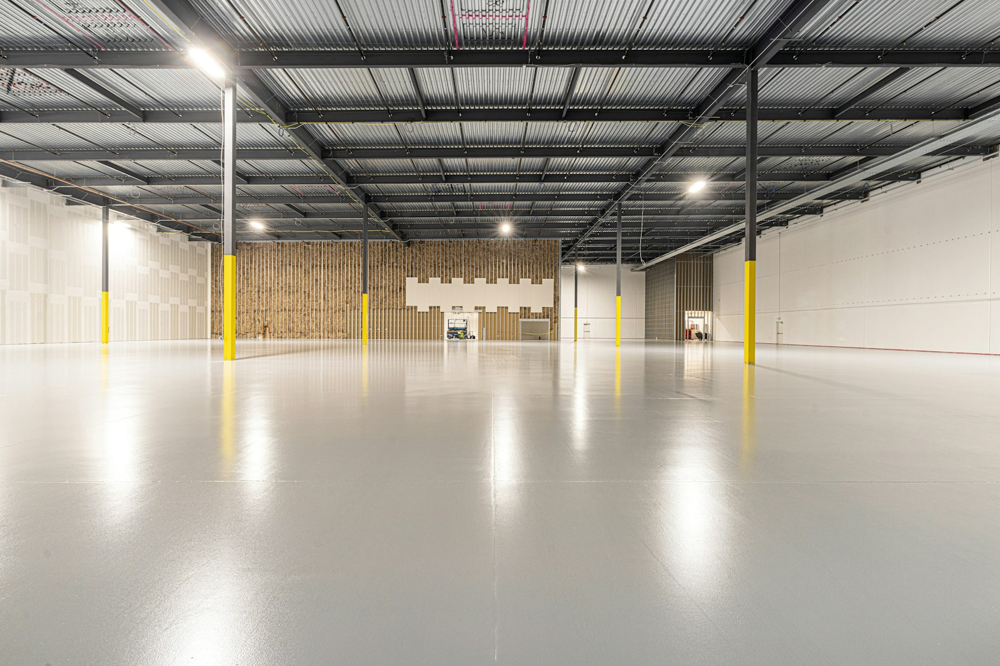
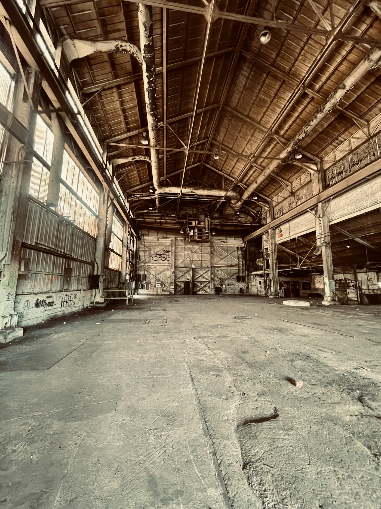

Retail & E-commerce
Peak-season capacity, store replenishment and returns handling with next-day cut-offs you can publish to customers.

A pharmacy delivery and a parts feed to a production line are both “transport”. They are not the same problem. We build the plan around the constraint that matters to you.
We start with a supply chain review — volumes, lead times, service windows, exceptions. Then we design a network you can actually staff and afford, and we commit to it in a service level agreement.

Sector experience means fewer questions at the start and fewer surprises later — because we have already met your compliance officer.
Peak-season capacity, store replenishment and returns handling with next-day cut-offs you can publish to customers.
Just-in-sequence line feeds, returnable packaging loops and emergency part runs on a two-hour call-off.
GDP-compliant 2–8 °C and frozen lanes with validated temperature logging, plus audit-ready documentation packs.
Chilled, ambient and dual-temperature transport with HACCP hygiene protocols and traceable batch handling.
ADR classes 2 to 9 with segregation planning, licensed drivers and emergency response cover on every lane.
Inbound raw material flows, outbound finished goods and abnormal-load projects up to 32 tonnes.
A grocery retailer needed every store stocked before 07:00 without adding a single trailer to its fleet. We rebuilt the departure schedule around store opening times rather than depot convenience.

Our visibility platform is deliberately unglamorous: it shows where the freight is, whether it is on time, and what happens next. It connects to your systems rather than replacing them.


Temperature excursions, peak capacity, customs delays, line stoppages. Chances are we have already planned around it.